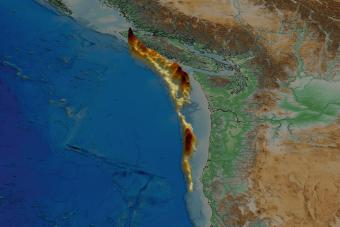

The University of Texas at Austin leads the way in addressing one of the world's most pressing challenges: providing secure, affordable and sustainable energy solutions that fuel economic growth and enhance lives globally.
With unmatched expertise in all facets of energy and an open-minded, pragmatic approach to embracing the full spectrum of solutions, UT is uniquely positioned to drive innovation and shape the future of energy.
30+
Energy centers and programs on the Forty Acres
400+
Energy researchers across campus
$854M
In energy-related funding over the last decade
80+
Industry partners collaborating on research and projects
While many universities focus on specific aspects of the world's energy needs, UT stands apart with its comprehensive strengths across the entire energy spectrum. A longtime leader in oil and gas, UT has also built world-class programs in hydrogen, geothermal energy, carbon capture, battery storage and the energy grid. Beyond scientific and technical expertise, UT is home to some of the world's foremost authorities in energy law, business and policy. With all of this anchored in the great state of Texas, UT is strategically situated to drive the next generation of solutions from the energy capital of the world.
Bring transformative impact to the future of energy through world-class collaborative research, innovative corporate partnerships and powerful student success initiatives.
